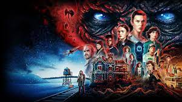

Meu nome é Enrico Toledo Claro

Eu nasci na cidade de Bebedouro, no interior do estado de São Paulo, Brasil. Desde pequeno, sempre tive um grande interesse em tecnologia e computadores. Com o passar dos anos, esse interesse só cresceu e hoje, aos 15 anos de idade, estou fazendo um curso de informática para aprender mais sobre programação e outras áreas relacionadas. O curso de informática tem me proporcionado uma visão mais ampla sobre o mundo digital e como ele funciona. Estou aprendendo a programar em várias linguagens, além de me aprofundar em conceitos de design, redes, hardware e outras áreas importantes da informática. É muito gratificante saber que, com essas habilidades, posso ajudar outras pessoas e também desenvolver minhas próprias ideias e projetos. Espero continuar aprendendo e evoluindo cada vez mais nessa área, e quem sabe um dia ser um profissional de destaque em tecnologia. E tenho certeza de que a minha cidade natal, Bebedouro, continuará sendo uma fonte de inspiração e motivação para mim.
Esporte e outros

Uma das minhas atividades favoritas é ir à academia. Para mim, exercitar o corpo é uma forma de cuidar da minha saúde e bem-estar físico e mental. Gosto de desafiar meus limites e sentir a sensação de superação após cada treino. Além disso, a academia é um lugar onde posso me desconectar do mundo exterior e focar apenas em mim mesmo e nos meus objetivos. É um momento em que posso deixar de lado as preocupações do dia a dia e me dedicar totalmente ao meu treino. Outro aspecto que me atrai na academia é a possibilidade de conhecer pessoas que compartilham do mesmo interesse que eu. É sempre inspirador conversar com outras pessoas sobre suas rotinas de treino e compartilhar experiências. Enfim, ir à academia é uma atividade que me traz muitos benefícios, tanto físicos quanto emocionais. É algo que eu realmente gosto e que faz parte da minha rotina.
Musica favorita
Kayblack - Melhor só (nao consegui intalar o video)
Filmes e Séries
Minha serie favorita é Stranger Things, infelizmente não consegui fazer o dowload de algum vídeo mas algumas fotos para demonstrar
©Todos os direitos reservados.